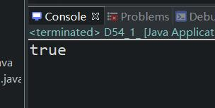
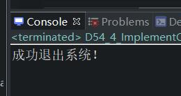

原文连接:https://www.cnblogs.com/ruigege0000/p/11955053.html
一、单例模式分为两种：
（1）饿汉式单例：在类加载阶段就创建了一个对象。
（2）懒汉式单例：用对对象的时候才会创建对象。（连载53中例子就是懒汉式）
饿汉式举例：
package com.bjpowernode.java_learning;
public class D54_1_HungtySingtonMode {
public static void main(String[] args) {
Customer54 c1 = Customer54.getCustomer54();
Customer54 c2 = Customer54.getCustomer54();
System.out.println(c1==c2);
}
}
//饿汉式单例模式
class Customer54{
private static Customer54 c = new Customer54();
private Customer54() {}
public static Customer54 getCustomer54(){
return c;
}
}
二、接口也是一种引用类型，可以等同看作类
1.如何定义接口，语法：
[修饰符] interface 接口名（）
2.接口中只能出现：常量、抽象方法
3.接口其实是一个特殊的抽象类，特殊在接口是完全抽象的
4.接口中没有构造方法，无法被实例化
5.接口和接口之间可以多继承
6.一个类可以实现多个接口。（这里的”实现“可以等同看作”继承“）
7.一个非抽象的类实现接口，需要将接口中所有的方法“实现/重写/覆盖”
package com.bjpowernode.java_learning;
public interface D54_2_InterfaceExercise {
public static final String SUCCESS = "sucess";
public static final double PI = 3.1415926;
//public static final在接口中是可以省略的，因为由于语法规则知道，只能是常量
byte MAX_VALUE = 127;
public abstract void m54();//抽象方法
void test54();//这也是抽象方法，这里的public abstract也是可以省略的。原因同上
}
interface B54 {
void m2();
}
interface C54{
void m3();
}
interface D54{
void m4();
}
interface E53 extends B54,C54,D54{
void m5();
}
//implements是实现的意思
//由于类是单继承的，所以这里使用新的关键字implements来实现
class MyClass implements B54,C54{
public void m2() {}//由于m2原来是抽象方法，这里我们新的类必须覆盖重写m2方法
public void m3() {}
}
class F54 implements E54{
public void m2() {}
public void m3() {}
public void m4() {}
public void m5() {}
}
我们按照上面的七个语法进行了举例。
三、接口的作用（先看个例子吧，总结下次再说）
package com.bjpowernode.java_learning;
public interface D54_3_CustomerService {
void logout();
}
package com.bjpowernode.java_learning;
public class D54_4_ImplementCustomer{
public static void main(String[] args) {
//以下程序面向接口去调用
D54_3_CustomerService d1 = new D54_4_ImplementCustomerService();//多态
d1.logout();//底层类，类型是接口，可以的是使用的接口中的方法，实际调用由于底层是类，所以实际用的类的方法
}
}
class D54_4_ImplementCustomerService implements D54_3_CustomerService{
//对接口中的抽象方法进行实现
public void logout() {
System.out.println("成功退出系统！");
}
}
四、源码：
D54_1_HungtySingtonMode.java
D54_2_InterfaceExercise.java
D54_3_CustomerService.java
D54_4_ImplementCustomer.java
地址：
https://github.com/ruigege66/Java/blob/master/D54_1_HungtySingtonMode.java
https://github.com/ruigege66/Java/blob/master/D54_2_InterfaceExercise.java
https://github.com/ruigege66/Java/blob/master/D54_3_CustomerService.java
https://github.com/ruigege66/Java/blob/master/D54_4_ImplementCustomer.java
2.CSDN：https://blog.csdn.net/weixin_44630050（心悦君兮君不知-睿）
3.博客园：https://www.cnblogs.com/ruigege0000/
4.欢迎关注微信公众号：傅里叶变换，个人公众号，仅用于学习交流，后台回复”礼包“，获取大数据学习资料